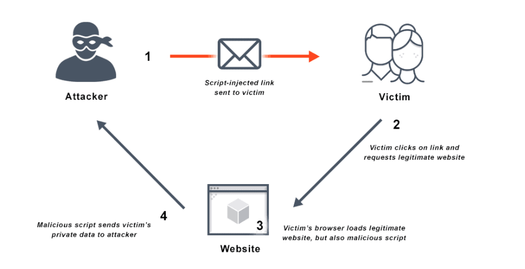
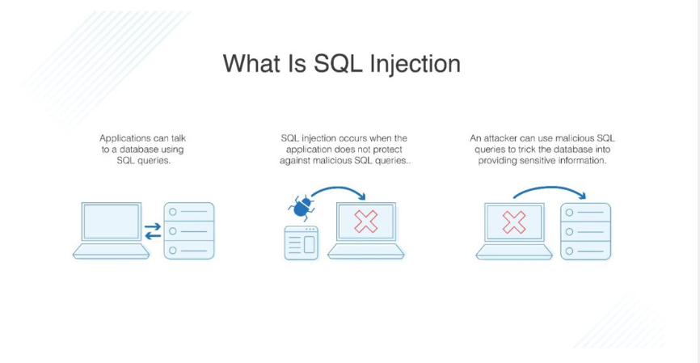
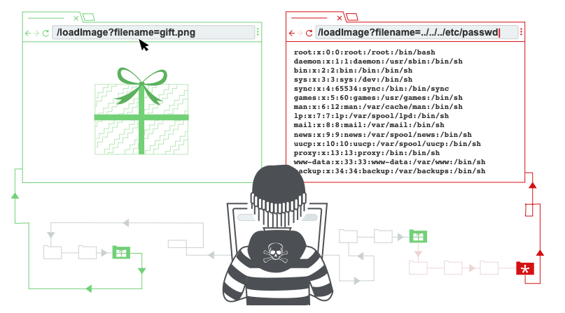
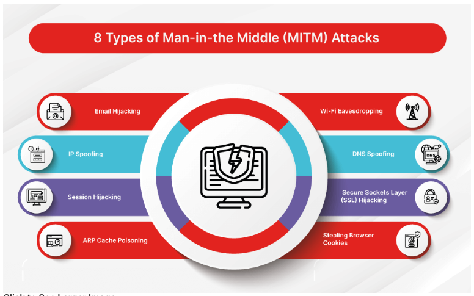
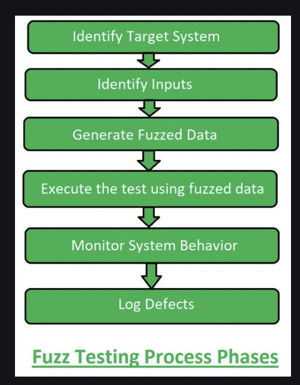
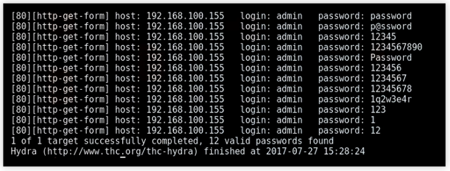
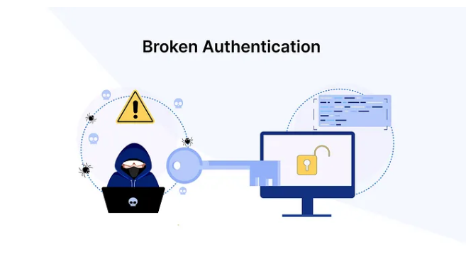

| Activity |
Date |
| First day to enroll for re-enrolling (continuing students) |
18 Nov 2024 |
| First day to enroll for new students (commencing students) |
02 Dec 2024 |
| Orientation |
24 Feb - 27 Feb 2025 (Wollongong campus)
Further information about Orientation is available here |
| Lectures Commence (weeks 1-7) |
03 Mar - 18 Apr 2025 |
| Last day to enroll / add subjects yourself |
14 Mar 2025 |
| Last day to enroll / add subjects with Head of Students approval |
21 Mar 2025 |
CENSUS DATE
- Fees due
- Last day to withdraw from subjects without paying for them
- HECS / FEE HELP debt reporting date
- Last day to change HECS / FEE HELP billing option
Learn more about Census date >
|
31 Mar 2025 |
| Student Services and Amenities Fees Due |
01 Apr 2025 |
| Last day to withdraw without academic penalty - subject deleted from record |
09 May 2025 |
| Fail grade recorded if subject withdrawn after this date |
09 May 2025 |
| Mid-Session Recess (1 week) |
21 Apr - 25 Apr 2025 |
| Lectures Recommence (weeks 8-13) |
28 Apr - 06 Jun 2025 |
| Study Recess (1 week) |
09 Jun - 13 Jun 2025 |
| Exams (2 weeks) |
14 Jun - 26 Jun 2025 |
| Mid-Year Recess / End of session break (4 weeks) |
30 Jun - 25 Jul 2025 |
| Release of Results |
10 Jul 2025 |
| Supplementary and deferred exam period |
21 Jul - 25 Jul 2025 |
| Name |
Description |
1. Cross-Site Scripting (XSS)

Source
|
Cross-site scripting (XSS) attacks deceive a browser into injecting harmful client-side scripts into a victim’s browser,
which then executes them automatically upon receipt. This malicious code can:
- Steal Sensitive Data
- Install Additional Malware
- Redirect the user to a fraudeulent website
Source
|
2. SQL Injection

Source
|
SQL is a programming language used for managing large datasets within a database. It is primarily utilised to retrieve, insert, update, and remove data from these databases.
A website or application becomes vulnerable to SQL injection when it accepts user input that is directly incorporated into an SQL query
SQL injection occurs when an attacker inserts malicious code into user input fields, which, when processed as part of a query, executes harmful commands within the database.
Source |
3. Directory Traversal

Source
|
Path traversal, also known as directory traversal, is a vulnerability that allows attackers to access arbitrary files on the server hosting an application.
This can include:
- Application Code & Data
- Credentials for back-end Systems
- Sensitive Operating System Files
In some cases, an attacker may also gain the ability to write to files on the server, potentially altering application data or behaviour and even gaining complete control over the system.
Source |
4. Man-in-the-Middle (MiTM)

Source |
A Man-in-the-Middle (MitM) attack is a cyberattack where attackers exploit weak web-based protocols to secretly intercept and manipulate communication between two parties, allowing them to steal sensitive data.
Those involved in email exchanges, text messages, or video calls are typically unaware that an attacker has infiltrated their conversation and is actively capturing their data.
While many cyberattacks operate discreetly, some MitM attacks take a more direct approach.
These can involve bots generating convincing text messages impersonating voices during calls, or spoofing entire communication systems to extract valuable data from victims' devices.
Source |
5. Distributed Denial-of-Service (DDoS)

Source |
A distributed denial-of-service (DDoS) attack is a malicious attempt to disrupt the normal functioning of a targeted server, service, or network by flooding it with excessive internet traffic.
DDoS attacks leverage multiple compromised devices, including computers and IoT devices, to generate overwhelming traffic directed at the target.
In simple terms, a DDoS attack is similar to an unexpected traffic jam blocking a highway, preventing legitimate users from reaching their destination.
Source |
6. Fuzz Testing (Fuzzing)

Source |
Fuzz testing operates by deliberately injecting malformed inputs into a system to uncover vulnerabilities and failures.
A fuzzer consists of three main components:
- A poet, responsible for generating malformed inputs or test cases.
- A courier, which delivers these test cases to the target software.
- An oracle, which monitors the system to detect any resulting failures.
Source |
7. Brute Force Attack

Source |
A brute force attack is a commonly used hacking technique, reportedly responsible for around five percent of confirmed security breaches.
This attack method involves systematically guessing usernames and passwords to gain unauthorised access to a system.
Despite its simplicity, brute force attacks are highly effective and have a significant success rate.
Source |
8. Drive-By Downloads
Source |
Drive-by download attacks occur when malicious programs are installed on a device without the user’s consent.
These attacks can be found across the web, even on legitimate websites, making them a widespread threat.
There are two main variants of Drive by Download attacks:
- Potentially unwanted programs or applications (PUPs/PUAs)
– Non-malicious but intrusive software that may negatively impact system performance.
- Malware-loaded attacks
– Downloads that contain harmful software designed to compromise or control a device.
Source |
9. Broken Authentication

Source |
Broken authentication refers to security vulnerabilities in a web application’s authentication process or session management, which can allow unauthorised users to gain access to the system.
These vulnerabilities often arise when authentication, session management, or password handling is improperly implemented, making the application susceptible to cyberattacks.
Session management is the process of maintaining a user’s state and data across multiple requests. When a user logs in, their credentials are verified, and a session is established.
This session remains active as the user interacts with the application. However, if session management is flawed, it can lead to broken authentication, potentially exposing user accounts to unauthorised access.
Source |
10. Phishing
Source |
Phishing is a cybercrime tactic used to deceive individuals into revealing personal information.
TAttackers send fraudulent emails or text messages, often posing as trusted organizations, to trick victims into sharing sensitive data such as online banking credentials, credit card details, or passwords.
Falling victim to phishing can lead to data breaches, financial loss, or identity theft.
Source |
{kind=link}